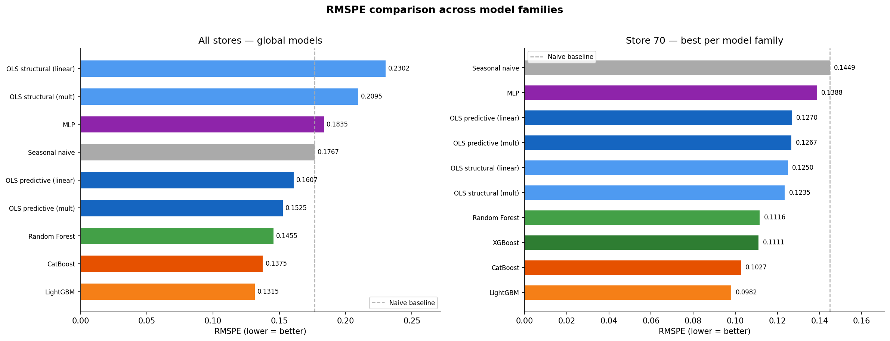
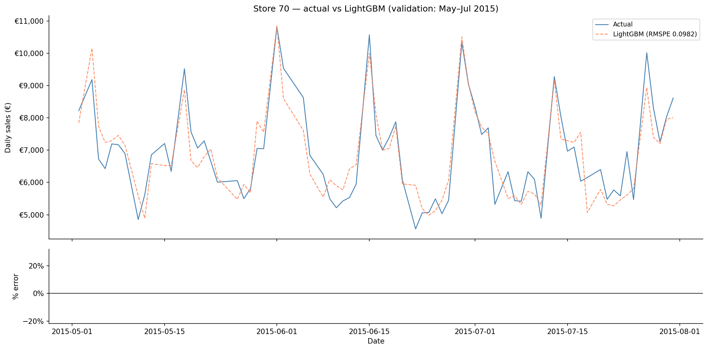
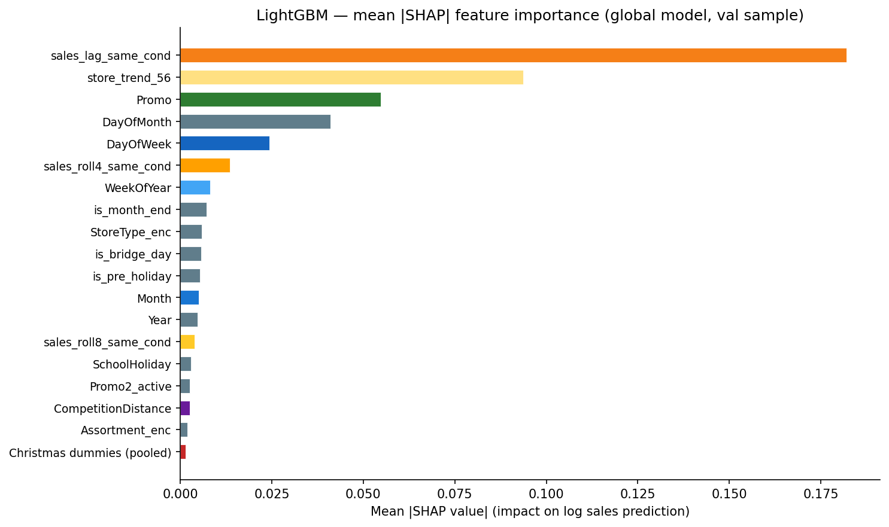
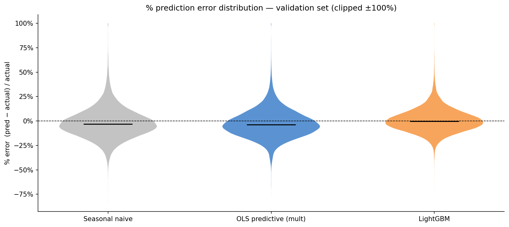
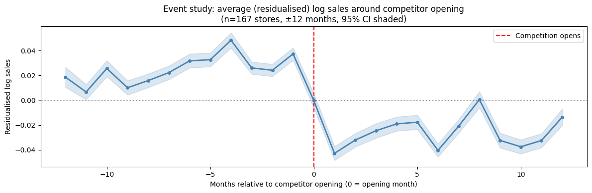
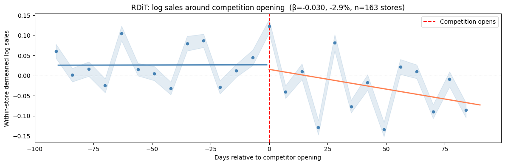
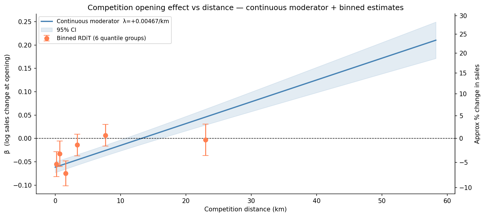

Overview
This project applies forecasting and causal inference to the Rossmann Store Sales Kaggle dataset — daily sales records for 1,115 German drugstores from 2013 to 2015. It has two objectives:
- Forecasting — benchmark a full model matrix (OLS variants, Random Forest, XGBoost, LightGBM, CatBoost, MLP, Prophet) on RMSPE, the Kaggle competition metric.
- Causal inference — move beyond naive correlations to estimate the causal effect of (a) nearby competitor openings using Regression Discontinuity in Time, and (b) promotional campaigns using a Causal Forest with Double ML.
Results at a Glance
Forecasting — all-stores RMSPE (validation: May–Jul 2015)
| Model | RMSPE | Notes |
|---|---|---|
| Seasonal naive | 0.1767 | Same day 52 weeks prior |
| OLS structural (linear) | 0.2302 | Calendar + promo, raw sales target |
| OLS structural (mult) | 0.2095 | Calendar + promo, log(Sales) target |
| MLP | 0.1835 | 2-layer neural network |
| OLS predictive (linear) | 0.1607 | Lag features replace store FE |
| OLS predictive (mult) | 0.1525 | Log-lags + log(Sales) target |
| Random Forest | 0.1455 | 200 trees, log(Sales) target |
| CatBoost | 0.1375 | Native categorical support |
| LightGBM ★ | 0.1315 | Best — histogram boosting, full feature set |
| Prophet (20-store sample) | ~0.1498 | Per-store time-series model; no lag features |
Store 70 — single-store vs global models
| Model | Single-store | Global (filtered) |
|---|---|---|
| OLS structural (mult) | 0.1270 | 0.1235 |
| OLS predictive (mult) | 0.1252 | 0.1267 |
| Random Forest | 0.1116 | 0.1184 |
| XGBoost | 0.1111 | — |
| CatBoost | — | 0.1027 |
| LightGBM ★ | — | 0.0982 |


Methodology
Feature engineering
Raw date and store metadata are transformed into a rich feature set before any model sees the data. Key decisions:
-
Same-condition lags — the previous occurrence with the same
day-of-week and Promo status (
sales_lag_same_cond) turns out to be the single strongest predictor, beating any calendar or store-metadata feature. - Christmas/New Year dummies — one binary column per calendar date (Dec 15–24, Dec 26–31, Jan 2) so the model learns each day's multiplier independently rather than forcing a smooth polynomial through the holiday window.
-
Competition transition features —
comp_opened_last_6manddays_since_comp_openedsignal to ML models that lag features are unreliable during the 6-month window after a nearby competitor opens (the lag still reflects pre-competition actuals). - All lag features are computed on the full dataset sorted by date before the train/val split, so test-period rows look back into training actuals without leakage.
Model matrix — structural vs predictive
OLS models are organised along two axes:
| Structural | Predictive | |
|---|---|---|
| Multiplicative (log target) | OLS-SM | OLS-PM |
| Linear (raw target) | OLS-SL | OLS-PL |
Structural models use calendar and promo features; store fixed effects (absorbed via within-store demeaning — Frisch-Waugh theorem) leave coefficients as clean seasonal multipliers. Predictive models replace store fixed effects with lag/rolling features. The same-condition lag already encodes Promo status by construction, so Promo is excluded as a separate predictor.
LightGBM feature importance (SHAP)


Causal Analysis I — Competitor Opening Effect
Identification: Regression Discontinuity in Time (RDiT)
CompetitionOpenSinceYear/Month records when the nearest competitor opened.
For each of 163 treated stores (competitor opened mid-window, with ≥60 days either side),
we estimate a sharp discontinuity model within a ±90 day bandwidth:
β captures the immediate level shift at the opening. Store fixed effects are absorbed by within-store demeaning. Standard errors are HC3-robust.


Heterogeneity by competition distance — continuous moderator
Rather than splitting into terciles, we add distance as a continuous moderator interacted
with POST. Since CompetitionDistance is constant within store,
(POST × dist)dm = postdm × disti, so the specification
remains valid under within-store demeaning:

| Distance group | Range | β | % change |
|---|---|---|---|
| Close | < 1,153 m | −0.045 | −4.4% |
| Medium | 1,153 – 4,767 m | −0.044 | −4.3% |
| Far | > 4,767 m | +0.001 | n.s. |
| Continuous slope (λ) | per km | Effect → 0 at ~13 km | |
The pattern is a threshold rather than a smooth gradient — stores within roughly 5 km lose 4–4.5% of sales regardless of exact distance; beyond that the effect disappears.
Causal Analysis II — Promotion Heterogeneous Treatment Effects
Assignment mechanism
Before estimating the promo effect we verify the assignment mechanism empirically. Promo turns out to follow a strict centralised calendar:
- Weekdays only — Sat/Sun promo rate = 0.0% exactly.
- Perfectly synchronised — on every single day, either all open stores run Promo or none do (cross-store std = 0.000). It is a binary calendar toggle set by HQ.
- Slight size gradient — larger stores get marginally fewer promo weeks (β = −0.0025 per log-€, p = 0.011, R² = 0.006). Statistically significant but tiny — promo frequency varies from just 37.7% to 45.4% across all 1,115 stores.
The endogeneity is primarily temporal: promo weeks are correlated with seasonal factors that independently drive sales. DML controls for this by residualising both Y and T on the same rich feature set (including lag features that capture recent trajectory) before estimating the treatment effect.
Causal Forest with Double ML
econml.CausalForestDML with gradient boosting nuisance models:
- Regress log(Sales) on controls X → residuals Ỹ
- Regress Promo on controls X → residuals P̃
- Fit an honest random forest on (Ỹ, P̃) to estimate τ(x) per observation
The naive promo lift (mean promo days vs non-promo days) is +38.8%. Results from the causal forest will be added here once the model run completes.
Key Findings
-
Lag features dominate forecasting.
sales_lag_same_cond— the previous occurrence with the same weekday and Promo status — is the single strongest predictor, ahead of all calendar and store-metadata features. A store's own recent history is far more informative than any structural feature. -
Log target matters on RMSPE. Multiplicative OLS outperforms linear OLS by 3–6 pp because RMSPE penalises relative errors; a linear model's loss is dominated by large-volume stores.
-
Structural OLS underperforms globally. Without access to recent sales trajectory, the structural model (RMSPE 0.21) lags well behind predictive OLS (0.15) and tree models. Within a single store the gap narrows considerably.
-
Gradient boosting is best in class. LightGBM (0.1315) and CatBoost (0.1375) outperform all OLS and Random Forest variants with the same feature set — the ensemble handles non-linearities and interactions that OLS cannot.
-
Competitor opening reduces sales by ~3%. The RDiT estimate is β = −0.030 (−2.9%), concentrated within ~5 km. The placebo test confirms the result is not driven by pre-existing trends.
-
Competition effect is a threshold, not a gradient. Stores within 5 km lose 4–4.5% regardless of exact distance; beyond that the effect is statistically indistinguishable from zero. The linear moderator estimates the effect reaches zero at ~13 km.
-
Promo is a centralised binary calendar. Cross-store synchronisation is perfect (std = 0.000 on every day). The naive +38.8% lift is confounded by seasonal scheduling; the DML-adjusted estimate controls for this via residualisation.
Reproducing Results
# 1. Get the data (Kaggle CLI)
kaggle competitions download -c rossmann-store-sales -p data/raw/
unzip data/raw/rossmann-store-sales.zip -d data/raw/
# 2. Run in Docker
docker compose up -d
docker exec rossmann-sales-forecast-notebook-1 python notebooks/03_feature_engineering.py
docker exec rossmann-sales-forecast-notebook-1 python notebooks/04_models.py
docker exec rossmann-sales-forecast-notebook-1 python notebooks/05_competition_opening.py
docker exec rossmann-sales-forecast-notebook-1 python notebooks/06_model_comparison.py
docker exec rossmann-sales-forecast-notebook-1 python notebooks/07_promo_causal_forest.pyFull code and data instructions at github.com/bakered/rossmann-sales-forecast .